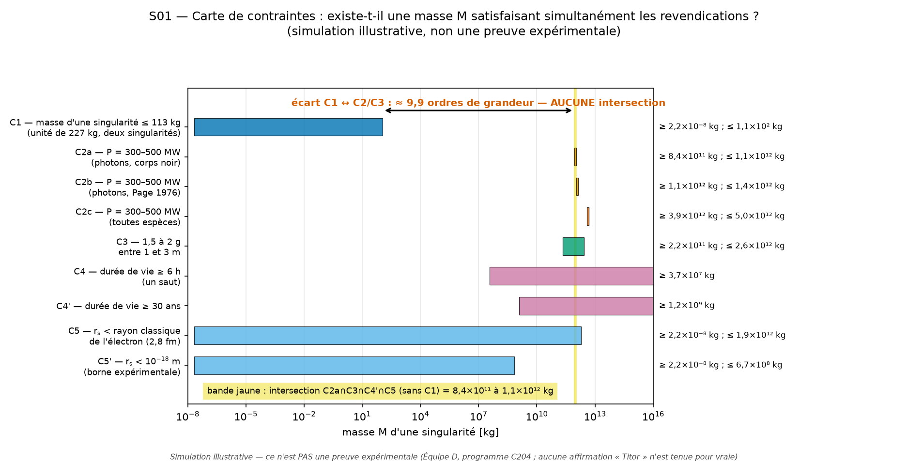
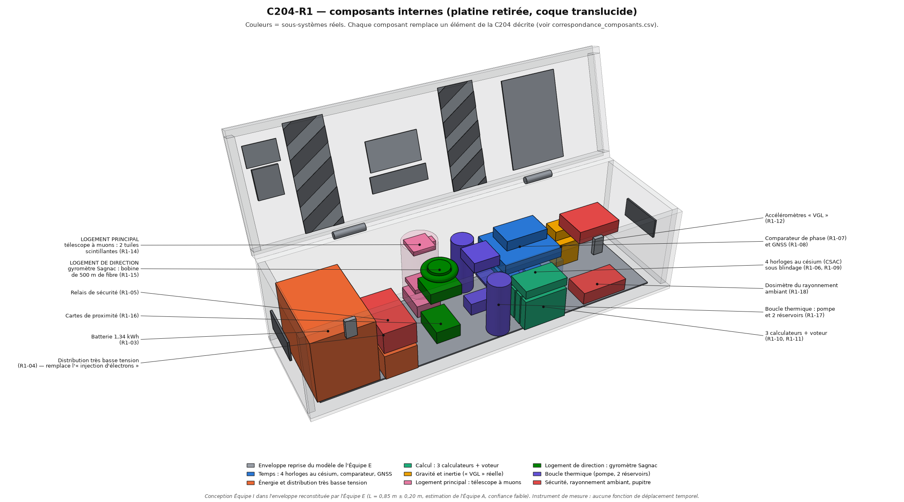

La « machine temporelle C204 » à l'épreuve de la physique
Étude critique des documents attribués à « John Titor » (2000-2001) : reconstitution de l'objet décrit, analyse physique, simulations, et conception de ce que l'on pourrait réellement construire.
Rien de ce qu'affirment les documents d'origine n'est tenu pour vrai. Les vues « si elle fonctionnait » reconstituent un récit ; elles ne correspondent à aucun phénomène observé. Aucune expérience n'a été réalisée.
Simulateur 3DVue éclatée, « si elle fonctionnait », ce que dit la physique, version constructible
Visionneuse du modèleChaque pièce avec sa source et son niveau de preuve
Guide de constructionCe qui peut réellement être construit, et comment
Le verdict en cinq points
- Un objet, pas une machine. Les documents montrent l'extérieur d'un coffre à deux logements circulaires. Rien ne documente l'intérieur.
- Exclue par la physique connue. Écarts de 10 à 30 ordres de grandeur, recalculés par cinq équipes.
- Des chiffres empruntés à de la vraie physique. Puissance, taille et masse annoncées sont celles d'un trou noir primordial d'environ 10¹² kg — incompatibles avec une unité de 227 kg.
- Périphérie constructible, cœur impossible. Horloges, calculateurs à vote, gravimètre : oui. Micro-trous noirs, confinement, évent à rayons X : non.
- Jamais vers le passé. Vers le futur, l'effet est réel mais infime : environ 0,5 milliardième de seconde par heure pour la version constructible.
En images



Les rapports
Synthèse du programmeLes treize livrables, les dix questions, les limites
Guide de constructionRéplique inerte, version d'initiation, palier R1 complet
Inventaire des documentsLes 22 pièces, leur provenance, leur attribution
HistoriqueChronologie 2000-2001 et diffusion ultérieure
Dossier techniqueL'objet tel que décrit, plans, dimensions
Physique théoriqueKerr, Tipler, micro-trous noirs, causalité
IngénierieSous-système par sous-système : constructible ou non
SimulationsNeuf simulations reproductibles
ExpériencesDouze protocoles sans danger
Critique de notre propre travailValidation contradictoire et corrections
Recherche contemporaineLittérature 2001-2026, bibliographie vérifiée
Machine optimiséeTrois paliers de machine cohérente